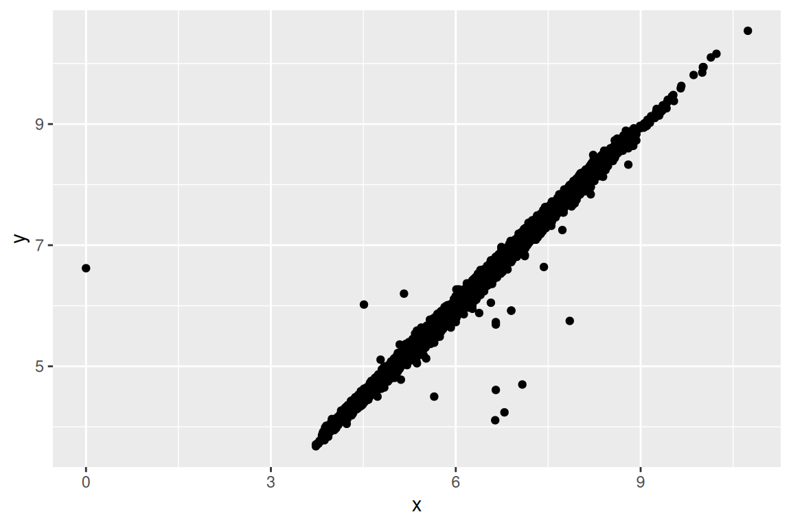
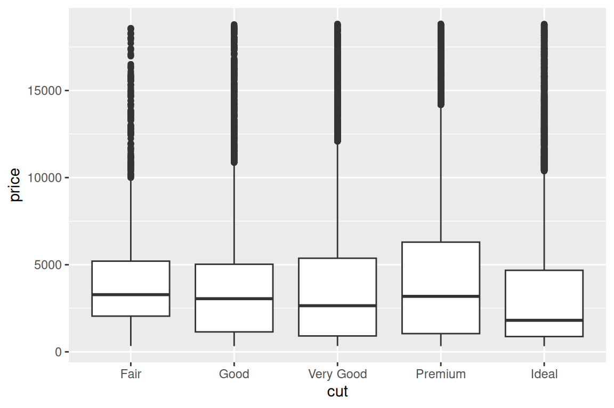
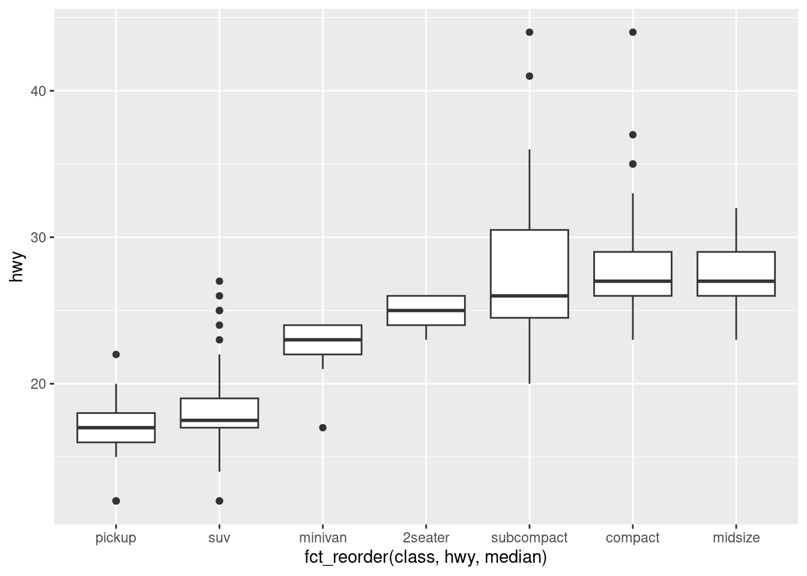
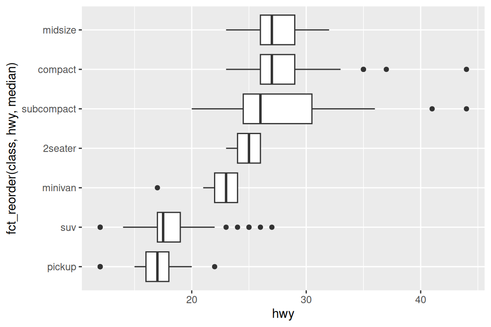
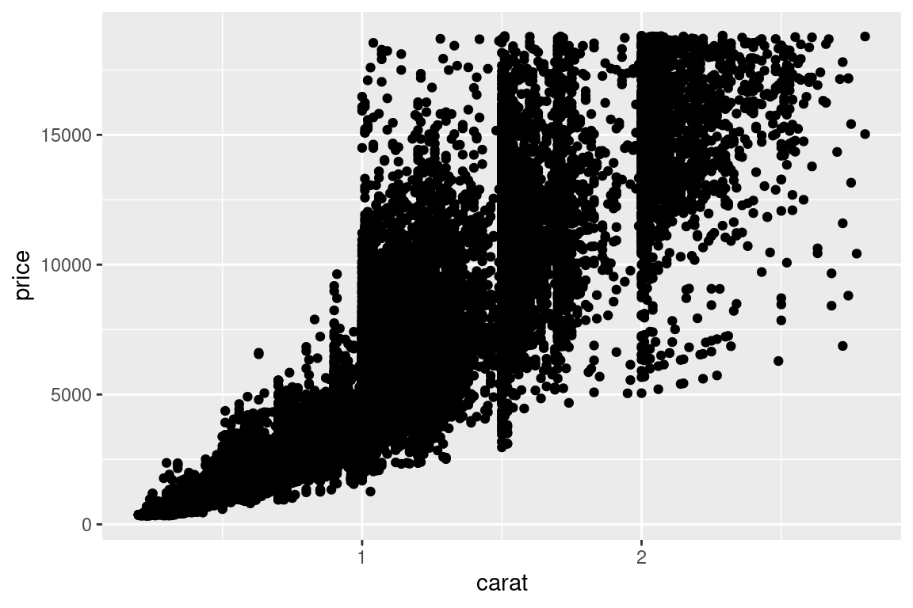
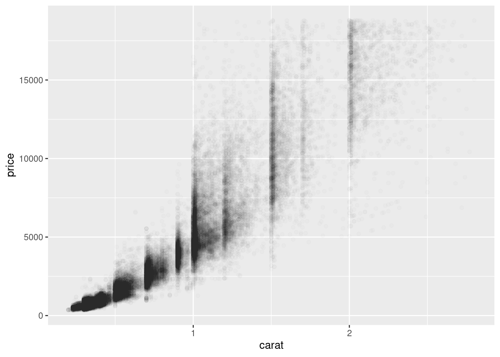

Visualizar valores inusuales en la tabla de diamantes, filtrando por largo (x) y ancho(y) de los diamantes, seleccionando, largo, ancho y profundidad (z) del diamante y ordenando según el ancho
#?diamondsunusual <- diamonds |>filter(y <3| y >20) |>select(price, x, y, z) |>arrange(y)knitr::kable(unusual) # produce:
price
x
y
z
5139
0.00
0.0
0.00
6381
0.00
0.0
0.00
12800
0.00
0.0
0.00
15686
0.00
0.0
0.00
18034
0.00
0.0
0.00
2130
0.00
0.0
0.00
2130
0.00
0.0
0.00
2075
5.15
31.8
5.12
12210
8.09
58.9
8.06
Valores Inusuales
Eliminar toda la fila con valores extraños (No recomendado)
diamonds2 <- diamonds |>filter(between(y, 3, 20))
Remplazar los valores inusuales con valores faltantes
diamonds2 <- diamonds |>mutate(y =if_else(y <3| y >20, NA, y))
Diagrama de dispersión que relaciona el largo con el ancho de un diamante.
ggplot(diamonds2, aes(x = x, y = y)) +geom_point(na.rm =TRUE) # Importante na.rm = TRUE para que no salga

# el mensaje de que se cambiaron los valores inusuales por valores # faltantes
Covariación
Variable categórica y numérica
Gráfico de frecuencia que muestra la variación de el precio según su calidad (cut) de un diamante (difícil de interpretar)
Diagrama de caja que muestra la variación del precio según su calidad (fácil de interpretar)
ggplot(diamonds, aes(x = cut, y = price)) +geom_boxplot()

Diagrama de caja que muestra la variación del hwy (millas por galón) según la clase de auto. Pero las cajas ordenadas según la mediana de su hwy
?mpg # prduce: hwy = millas por galón en carreteraggplot(mpg, aes(x =fct_reorder(class, hwy, median), y = hwy)) +geom_boxplot()

El mismo gráfico girado 90 grados para que sea más fácil visualizar los nombres que son largo
ggplot(mpg, aes(x = hwy, y =fct_reorder(class, hwy, median))) +geom_boxplot()

Dos variables numéricas
Diagrama de dispersión que relaciona el peso (carat) con el precio de un diamante
ggplot(smaller, aes(x = carat, y = price)) +geom_point()

Diagrama de dispersión con transparencia que relaciona el peso (carat) con el precio de un diamante. La transparencia es importante porque se visuliza la transposición de los puntos del diagrama
ggplot(smaller, aes(x = carat, y = price)) +geom_point(alpha =1/100)

Diagrama de caja que relaciona el precio del diamante con el precio como si el peso fuera una categoría gracias a group = cut_width(), esto agrupa (crea categorías) basadas en los valores numéricos de carat
ggplot(smaller, aes(x = carat, y = price)) +geom_boxplot(aes(group =cut_width(carat, 0.1)))